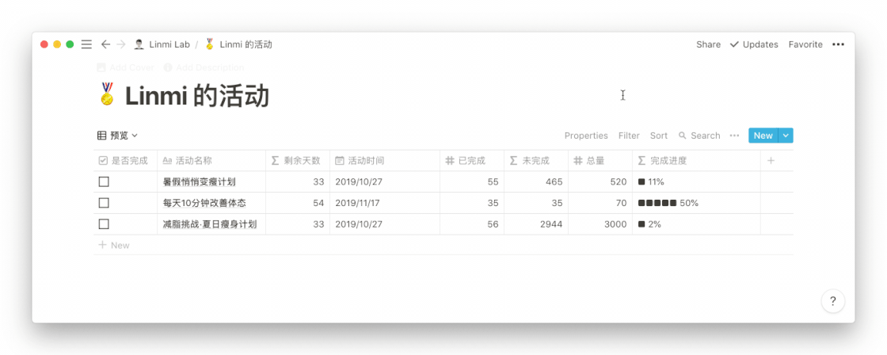

如果在了解 Notion 的基础功能以及模版之后，你仍然不知道能用 Notion 做什么事，不妨跟着下面几个实例实现几个实用小工具，学习其他人的 Notion 使用思路和技巧。
先来试试用 Notion 实现展示年时间进度条的工具，在这个实例中，我们需要用到计算日期已经过去多久的函数，整个进度条是由十个方块■组成，一个方块■代表10%，0 – 10% 就占一个方块■，11% – 20% 就占两个方块■■，以此类推。
N比如，今年已经过去 180 天，经过计算，我们可以得出今年已经走完了 180 / 365 = 49%，49% 在 41% – 50% 之间，占用五个方块，显示效果为「■■■■■ 49%」。
虽然说是介绍 Notion 分栏功能使用场景的实例，但是这里还会介绍更多串联 Database 一些 Notion 用法，能够帮助你真正地在实际使用过程中用好这项功能。
总而言之，你只需要将 Notion 想象成积木一样，你可以自由地组合其中的内容，组合它为你提供的各种 Block，这些小工具的实现其实没有你想的那么难。
这个小工具利用了 Notion 的数据库功能，让我们通过制作一个小工具，方便地管理我们的订阅服务，以便及时取消不需要的服务或者进行续费。
通过学习这个实例，你可以了解到这些内容：
当然，这个小工具只是作为一个 Notion 使用思路的参考，你也可以利用 Notion 的数据库功能实现其它需求，比如：